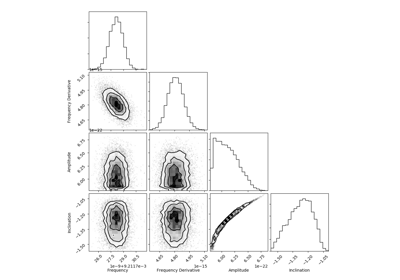

UCB Use Case Gallery¶
Below are examples using UCB catalogs.
Catalog data products are formatted as `pandas` data frames and stored in HDF5 files.
Top level catalog files have the list of all candidate detections, point estimates, etc.
In addition, posterior samples for each candidate are stored as separate data frames and grouped together by frequency segments. There are different catalog products for different LISA observing times.


